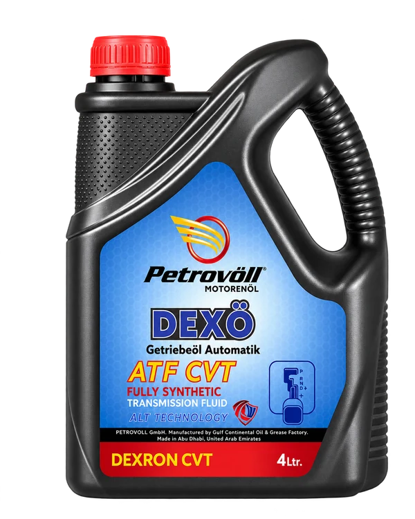
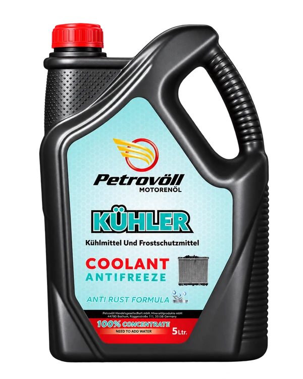
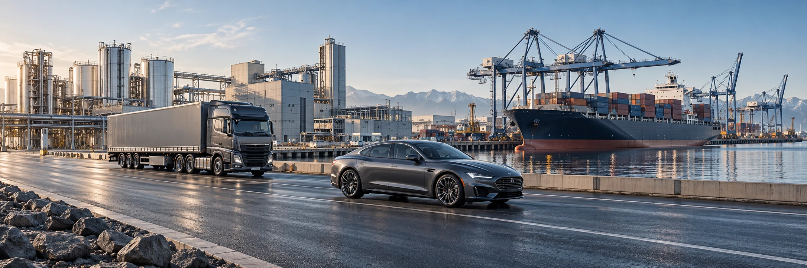
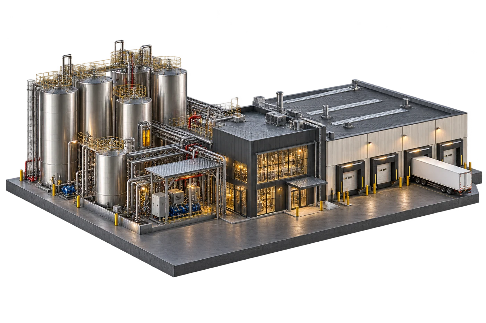
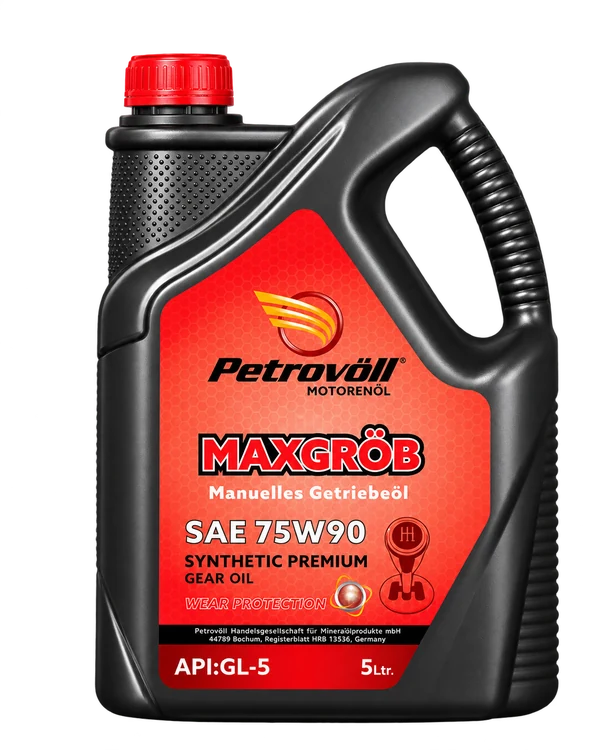
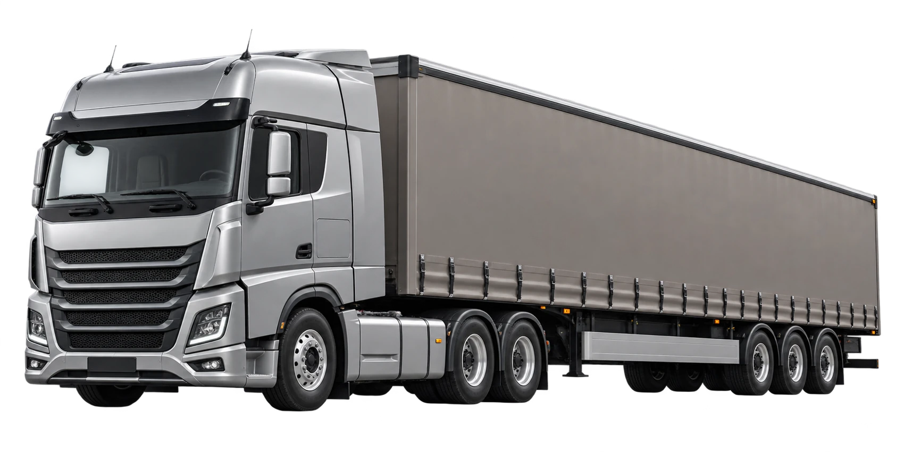
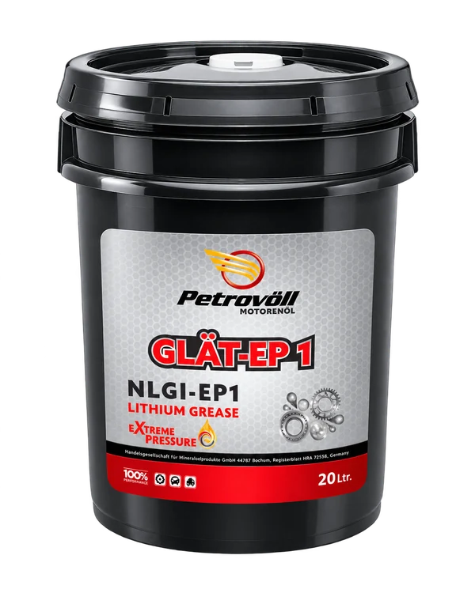
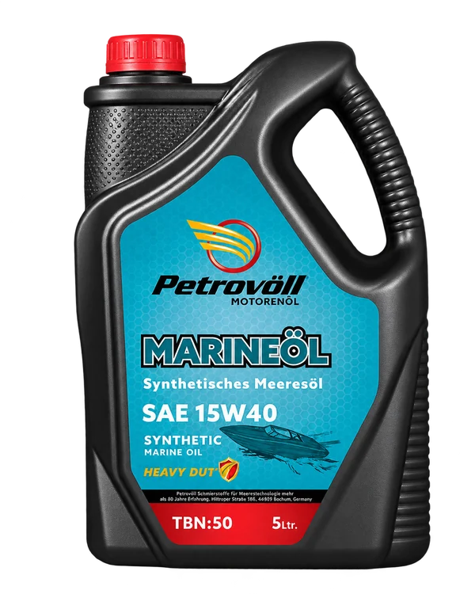

01 / AutomotiveFor the road.
For the road.
And everything
ahead.
Engine oils, transmission fluids and cooling-system care. A complete range for the systems behind every journey.



Automotive, industrial and marine lubricants. Formulated with purpose. Produced with precision.

From selected ingredients to finished lubricant. Follow the production process as each stage comes into focus.
Automated blending and controlled filling at our Abu Dhabi facility. In-house laboratory testing supports raw material checks and finished product analysis.
Learn moreOne connected journey. From precision blending to the machines that move us.

Engineered within.Engine oils, transmission fluids and cooling-system care. A complete range for the systems behind every journey.


Diesel engine oils and heavy-duty formulations for trucks, transport and demanding fleet applications.



Ready for the working day.Hydraulic oils, gear lubricants and specialist formulations shaped by the requirements of industrial equipment.


Marine engine and outboard lubricants for the operating conditions of life on the water.

German roots. Practical expertise.
A commitment to the machines and people who depend on us.

Base oils. Additive systems.
One carefully balanced formulation.
Founded in Bochum, Germany, in 1999, Petrovöll develops, produces and distributes lubricants for automotive, industrial and marine applications.
Discover our originsSolutions shaped by real operating conditions, from everyday journeys to demanding industrial environments.
Controlled blending, laboratory checks and filling processes support consistency across the range.
Product guidance and distribution partnerships help connect the right formulations with the right applications.
Explore lubricants by application, with a range built around different operating demands.
 01 / Automotive performance
01 / Automotive performanceEngine oils, transmission fluids, coolants and car care for every journey.
Choose a product group to explore the catalogue.
An international distribution network, supported by local understanding and shared ambition.
Company office
Research & development in Bochum
Production & blending facility
Across the Middle East, Africa, South America, Asia-Pacific and the CIS.
Choose a location to inquire about local distribution.
Contact our teamWe welcome established lubricant and automotive businesses with regional distribution expertise.
Product guidance, technical questions or a new partnership. Our team is ready to help.
info@petrovoll.com+49 201 319377074Schnabelstraße 1
45134 Essen, Germany